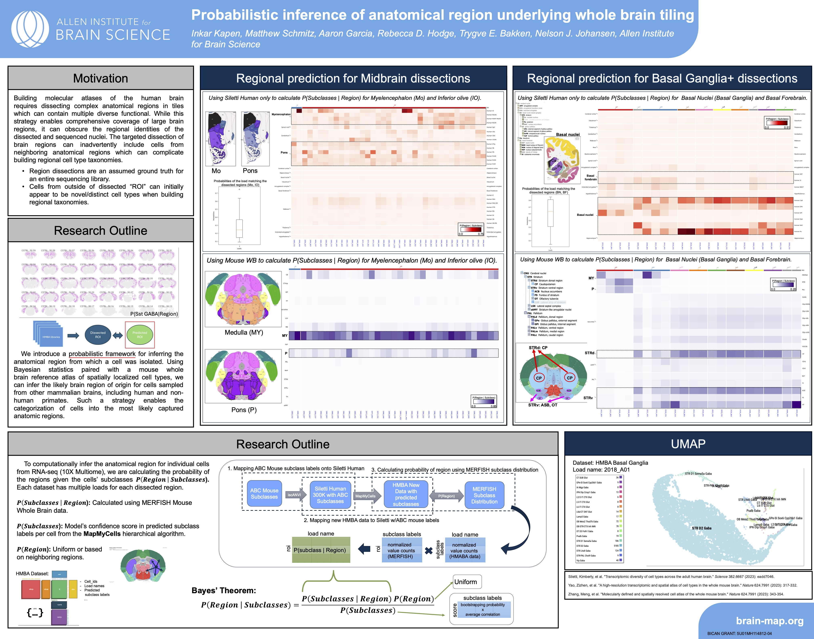
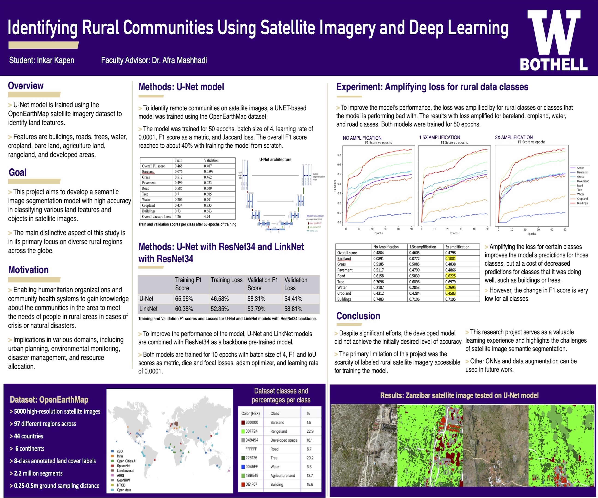

|
Inkar Kapen I'm a bioinformatics analyst at Allen Institute in Seattle, where I apply machine learning models to segment cells in brain tissue images, classify cell types, and predict anatomical brain regions from sequencing data. Email / CV / Google Scholar / ResearchGate / Github |

|
ResearchI'm interested in multimodal representation learning and interpretable machine learning. |
Challenges and Hackathons / Posters / Publications / Tutorials
Challenges and Hackathons |
|
MapMySections – Data Challenge
[webtool]
[model]
[code]
Inkar Kapen. Challenge Description and Participant Information MapMySections is a multimodal machine learning challenge that asks participants to infer brain cell types directly from large-scale, multi-resolution 3D fluorescence microscopy images of genetic tools. A method that can predict spatial transcriptomic cell-type identities from imaging data alone would be immediately applicable to thousands of existing genetic tools, greatly improving their utility and interpretability. For this challenge, I trained a ResNet–based 3D convolutional neural network on paired 3D fluorescence microscopy images and spatial transcriptomic cell-type labels to predict cell-type identity directly from imaging data. |
|
|
Brain Image Segmentation – Hackathon Winner
[webtool]
[code]
Inkar Kapen, Ashwin Bhandiwad. Brain annotation is a time-intensive task that requires manual pixel-by-pixel labeling of structures defined by the human brain ontology. This project’s goal was to develop and deploy a model that transferred labeled sections of the human brain atlas images to unlabeled neighbors. This represents an important first step in label transfer for anatomical atlas images and will be useful for future atlas segmentation efforts. |
Posters |
|

Probabilistic Inference of Anatomical Region Underlying Whole Brain Tiling.
|

Identifying Rural Communities Using Satellite Imagery and Deep Learning
|
Publications |


|
Cross-species Consensus Atlas of the Primate Basal Ganglia
Nelson J. Johansen, Yuanyuan Fu, ..., Inkar Kapen, ..., Trygve E. Bakken. Submitted to Cell, 2025 arXiv A multiomic consensus atlas of 1.8 million nuclei from human, macaque, and marmoset spanning eight BG structures. The atlas integrates cross-species gene expression, open chromatin, and spatial profiling enabling the definition of conserved and divergent cell types. |


|
Human, Macaque, and Mouse Consensus Cell Type Atlas of the Spinal Cord
Matthew T. Schmitz*, Nelson J. Johansen*, Niklas Kempynck*, Inkar Kapen, ..., Trygve E. Bakken. Submitted to Neuron, 2025 arXiv link will be added soon A unified, cross-species cell type atlas based on the integration of single-nucleus gene expression, chromatin accessibility, and spatial transcriptomic data from cervical, thoracic, lumbar, and sacral levels, including motor neurons sampled across the entire rostro-caudal axis of the macaque spinal cord. |


|
Circuit specific specialization of human basal ganglia astrocytes
Yuanyuan Fu, Nelson J. Johansen, ..., Inkar Kapen, ..., Trygve E. Bakken. Submitted to Cell, 2025 arXiv A multimodal atlas built by integrating single-nucleus RNA-sequencing and chromatin accessibility with DNA methylation, 3D chromatin conformation, and spatial transcriptomics, then mapped basal ganglia programs onto a whole-brain reference. |
|
<


|
A cross-species spatial transcriptomic atlas of the human and non-human primate basal ganglia
Madeleine N. Hewitt, Meghan A. Turner, ..., Inkar Kapen, ..., Stephanie C. Seeman. Submitted to Cell, 2025 arXiv A cellular-resolution, spatial transcriptomic atlas of the basal ganglia in human, rhesus macaque, and common marmoset, sampling over one million cells in each species. The atlas integrates spatial data with a cross-species, consensus snRNA-seq cell type taxonomy, revealing conserved principles of molecular organization within and across structures. |
Tutorials |
|
Template: source code. |